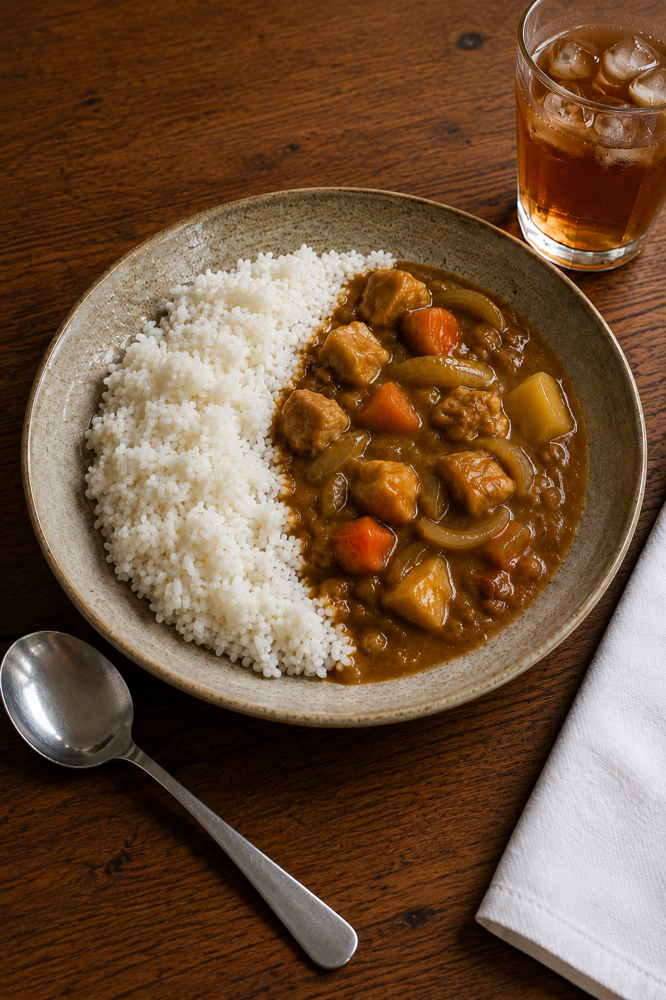

Japanese Chicken Curry

Home
Description
This is a simple recipe for Japanese style curry, which is comprised of various vegetables, herbs, sauces, and diced chicken served alongside white rice.
The proportions and measurements used here are meant to serve 2 people, but feel free to adjust the recipe to best fit your needs!
(Culinary Reference: Tad = 1/4 tsp. Dash = 1/8 tsp. Pinch = 1/16 tsp.)
Ingredients
Meat and Vegetables
- 8 ounces of chicken thighs
- 1/2 large onion
- 1 medium carrot
- 1 medium gold potato
- 1 garlic clove
- 1 teaspoon of fresh grated ginger
Spices and Blends
- Dash of black pepper
- Dash of kosher salt
- 1/2 teaspoon of turmeric
- Tad of coriander
- Tad of cumin
- Pinch of cardamom
- Pinch of allspice
- Pinch of cinnamon
- Pinch of sansho pepper
Sauce for the Curry
- 1 tablespoon of tomato paste
- 1/4 peeled, grated, and oxidized apple
- 1/8 mashed and oxidized banana
- 3/4 cup of chicken broth
- 1/2 cup of water
- 1 teaspoon of soy sauce
- 1 teaspoon of Worcestershire sauce
- 1 teaspoon of ketchup
- 1.3 ounces of Japanese curry roux (S&B Golden Curry, finely chopped)